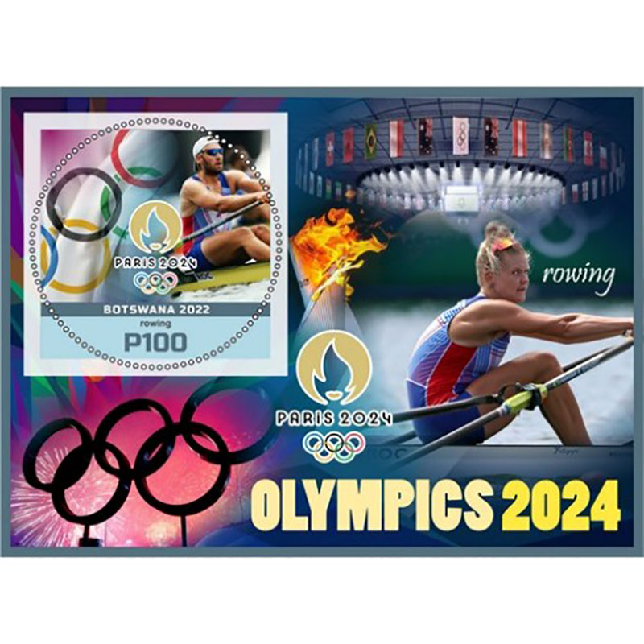
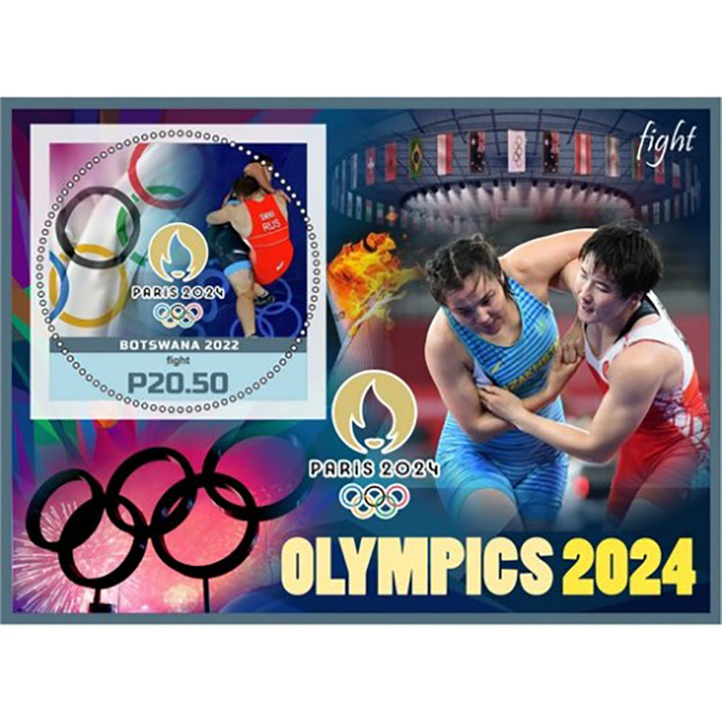
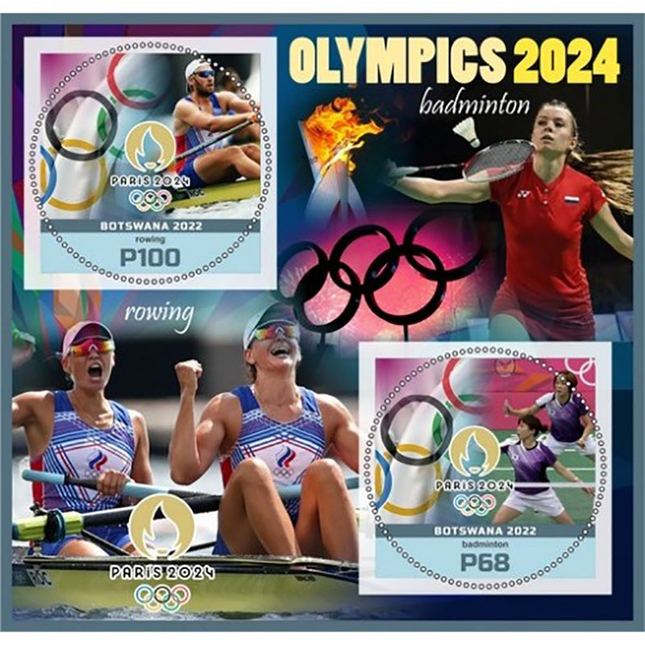
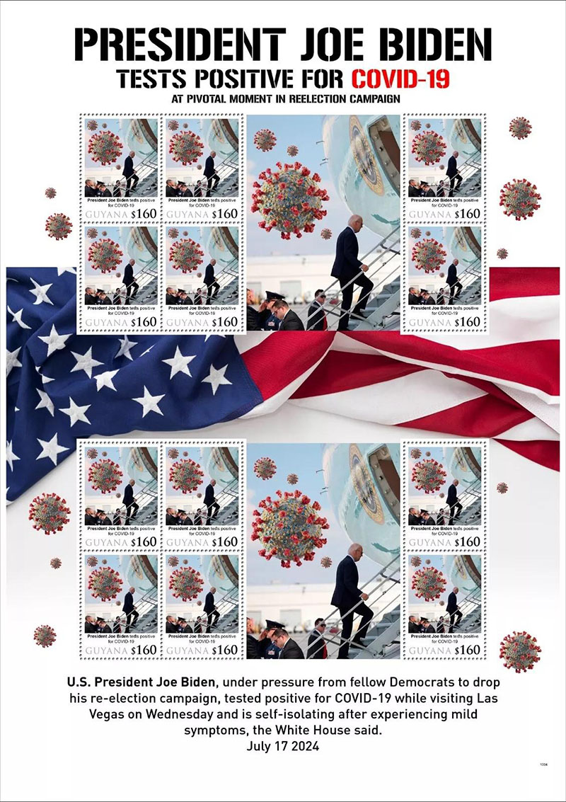
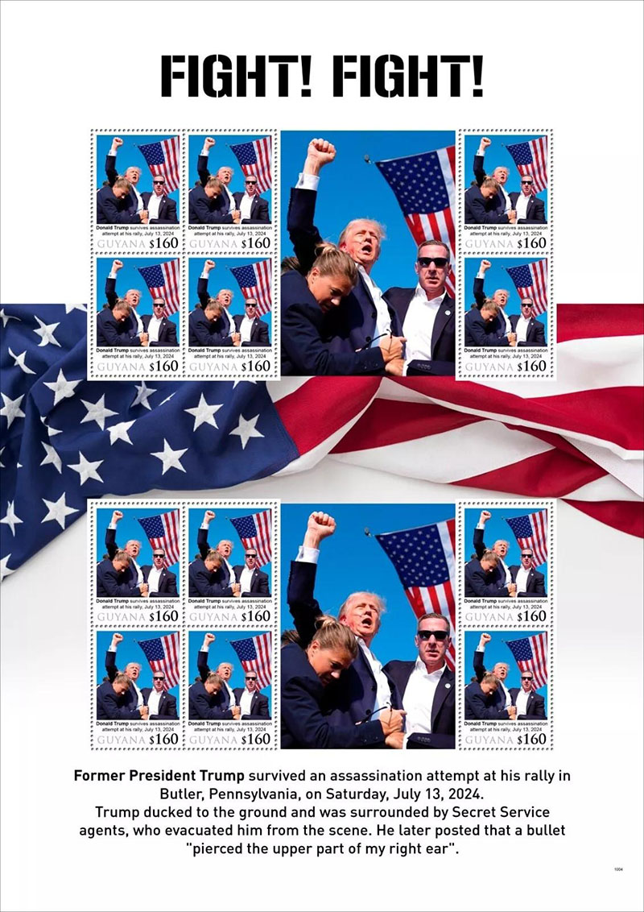

Illegal Stamps in 2024
ILLEGAL STAMPS 2024
Victor Manta
Philatelic journalist, PWO (*)In an interview this year with Mr. Benjamin Combes, the new UPU Philatelic Manager, he said:
"While a helpful tool, circulars alone are not sufficient to raise awareness, which is why we are still using other methods of communicating with members and other stakeholders on this issue.
Today, we are taking a slightly different approach and prefer to concentrate, in collaboration with designated operators, on more concrete oversight measures that are based on exchange, discussion and education of all stakeholders."
And indeed, the UPU has issued only one circular on illegal stamps this year, number 134, dated 2 September, in which Botswana denounced 8 miniature sheets issued illegally in its name. We present all eight on this page.

Please note that one of them features the Olympic sports called "Fight" which has never appeared in the Olympic Games.

As the collaboration, invoked by Mr. Combes in the interview with us, did not bring any kind of tangible results, no one is surprised to see a lot of new illegals on the international markets.
A direct consequence is that the number of illegal stamps has not decreased.
They are everywhere and thriving!

A telling example is the denunciation made on the web by the Guyana Post Office Corporation (GPOC), which reproduces two illegal miniature sheets, produced in its name, which we reproduce below on this page. Our source is: https://www.kaieteurnewsonline.com/2024/09/14/gpo-cautions-against-purchase-and-use-of-illegal-postage-stamps/

Years, even decades, have passed without the expansion of the production and marketing of illegal stamps being properly addressed, this due to the neglect of the bodies that were supposed to protect collectors, mainly the Universal Postal Union (UPU), the International Federation of Philatelists (FIP) and the International Association of Philatelic Journalists (AIJP).

(*) PWO is the short for the Philatelic Webmaster Organization, whose website can be found at https://pwmo.org
Legal notice
• This is a piece of philatelic journalism. It is protected by the free speech and by the liberty of the press doctrines.
• Some short excerpts or images are sometimes used for illustration/teaching/criticism/commentary purposes only, to properly inform the worldwide readers.
• The fair use doctrine is strictly observed. Each excerpt is properly attributed and respects the rights of the copyright owners.
• We will immediately correct any piece of information that will be proved false.
|